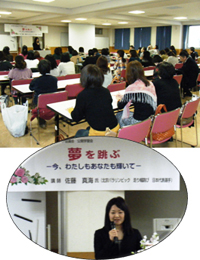

|
|

＜滝澤会長あいさつ＞ 講師の佐藤さんは、協議会委員の一人がパラリンピックの壮行会で佐藤さんに出会い、話を聞きたい、皆さんにも聞いてほしいとの思いから企画しました。今日の話が皆さん、ご家族、地域活動の中で、キラキラ輝く一助になると大変嬉しく思います。 ■学習会 講師：佐藤 真海氏(アテネ、北京、パラリンピック連続出場の走り幅跳び選手・サントリービジネスエキスパート（株）勤務） ＜概 要＞ ○佐藤真海さんの歩み 子供のころから運動する事が大好きで、文武両道を目標に頑張ってきました。大学2年生の冬、骨肉腫を発症。担当医が言う｢5年生存率｣という言葉が恐ろしく未来の姿が見えなくなりました。入院し、抗がん剤治療が始まり、先生に切断するのは最後の手段にしたいと言うと、残せば余命1年少しと言われました。手術後、復学の目標を持ちリハビリや抗がん剤による辛い治療も頑張りました。復学すると、置いて行かれたと感じ、想像を超えて落ち込み、人に会うのが辛く自宅にこもる日々でした。命を大切にしたい、何とかしたいと自分と向き合い自己分析する中で、障害者スポーツセンターを知り水泳を始め、スポーツ義足で走る事にも挑戦しました。そんな中、就職説明会でサントリーと出会い入社しました。現在は、次世代育成にかかわり、命の事や障害の事、夢に向かう事など伝えています。 ○みんなが暮らしやすい社会
～～ 参加者の感想 ～～
|